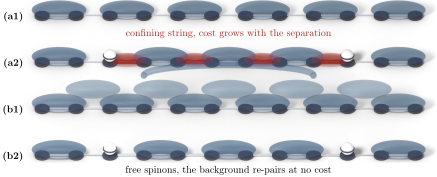

Advanced Quantum Materials 2027 · All lectures · Lecture notes
Session 8. Quantum Magnetism, Spinons and Kondo Physics
8.5 The dimerized Heisenberg model, a first step before a spin liquid
Before we study a frustrated Hamiltonian, it is useful to build the simplest possible macroscopic quantum magnet and to check explicitly that its ground state does what (8.3) told us. Let us take a fully dimerized Heisenberg model, which is made of dimers that are completely decoupled from each other, placed on a chain or on a two-dimensional lattice,
\[H = \sum_n J\, \mathbf S_{2n}\cdot \mathbf S_{2n+1}, \qquad J>0. \tag{8.4}\]
Since every dimer is decoupled from its neighbors, we can write the many-body ground state exactly, as a product of singlets over the pairs of the dimers,
\[|\Psi\rangle \sim \bigotimes_n \Big(|{\uparrow_{2n}\downarrow_{2n+1}}\rangle - |{\downarrow_{2n}\uparrow_{2n+1}}\rangle\Big), \qquad \langle \mathbf S_i\rangle = 0 \text{ on every site}. \tag{8.5}\]
In one sense this is a trivial Hamiltonian, a collection of independent zero-dimensional problems. But it already shows something important. A macroscopic Heisenberg Hamiltonian can have a ground state that does not break time-reversal symmetry, and this state is the direct generalization of the two-site singlet (8.3) to an extensive system. If we add small couplings between the dimers, the state changes smoothly and it still does not break time-reversal symmetry.
There is, however, an important difference to make here, because this state is not yet a quantum spin liquid. Its fundamental excitations still have spin \(1\). If we turn one singlet into its triplet partner, we obtain a triplon, which is a local transition from singlet to triplet, and it has the same structure as a magnon, with only a different name. A state that is built in this way, from a fixed and static pattern of singlets, is called a valence bond solid (VBS). To obtain a real quantum spin liquid, with spin-\(1/2\) excitations instead of spin-\(1\) triplons, we need more than a static dimer covering. We need the singlets to fluctuate and to resonate over the whole lattice, and this is the frustrated case that we study in the next section. Figure 8.3 shows this difference explicitly.

We turn one singlet of (8.5) into a triplet. What is the spin of this excitation?
Show the answer
The correct option is C.
The two spins of the dimer are in a triplet, which has \(S=1\). Both spins stay on the same bond, so this excitation has the structure of a magnon.
We add a weak coupling between the dimers of (8.4). What happens to the ground state?
Show the answer
The correct option is B.
The singlet-triplet gap protects the state, so a small perturbation changes it only a little. The state remains a valence bond solid until the coupling is of the order of the gap.
Try it. Run the dimerized chain with \(J=1\pm0.2\) and compare the profile with the uniform chain. The magnetization induced by the local field should decay much faster along the dimerized chain. Change 0.2 to 0.05 and see how the decay length grows when the dimerization is weaker.